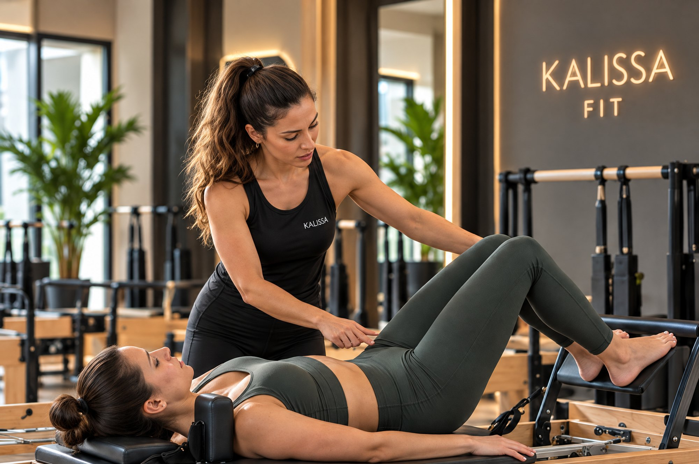
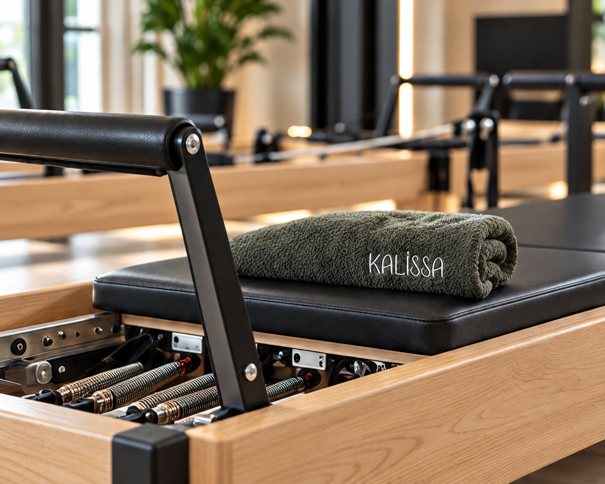
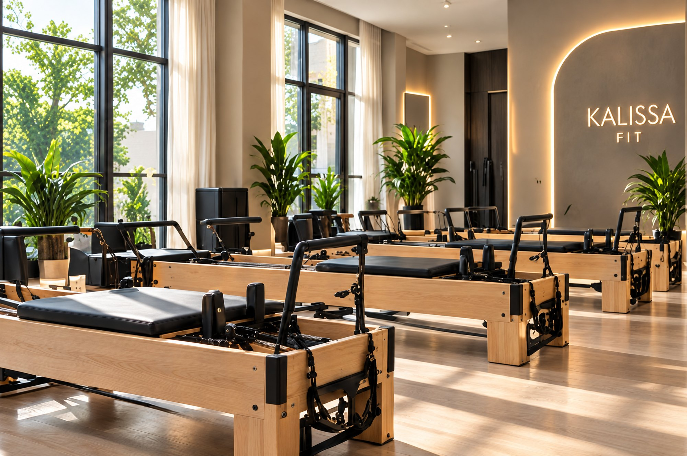

Reformer Pilates’e yeni başlayanlar katılabilir mi?
Evet. Yay direnci ve hareket aralığı seviyene göre ayarlanır; ilk derste ekipmanı ve temel hareketleri tanırsın.
Reformer Pilates ile tanış.
Hedeflerine ve deneyimine uygun
bir başlangıcı birlikte planlayalım.

Nefesini ve hareketini bilinçli şekilde
koordine etmeyi öğren.
Tüm dersler uzman eğitmen
eşliğinde, güvenli ve etkili ilerler.
Hedeflerine ve deneyimine uygun
bir programla ilerle.
Nefes, kontrol ve hareket farkındalığını bir araya getiren
Reformer Pilates’i keşfet. Dersin akışını başlangıç
seviyene göre birlikte belirleyelim.
Özetle Reformer Pilates; yaylı direnç sunan reformer aletinde, nefes ve kontrolle ilerleyen bir pilates çalışması. Kalissa Fit’te dersleri fizyoterapistimiz yönetiyor. Aşağıda aleti, ders akışını ve fizyoterapist eşliğinin farkını tek tek anlattık.
Pilates yöntemini 20. yüzyılın başında Joseph Pilates geliştirdi; ilk uygulamalar sakatlık sonrası toparlanmaya odaklanıyordu. Reformer ise bu yöntemi özel bir alete taşır: kayan bir yatak, yaylarla ayarlanan direnç ve tutma noktaları. Yaylar ise hareketi hem zorlaştırır hem destekler. Bu sayede kasların, uzarken de kısalırken de kontrollü biçimde çalışır. Kısacası Reformer Pilates, gücü, esnekliği ve dengeyi aynı derste buluşturur.
Sonraki konuBir ders nasıl geçer?İlk derste fizyoterapistin duruşunu ve hareket alışkanlıklarını gözlemler. Sonra reformer aletini tanır, yayların ve kayan yatağın nasıl çalıştığını öğrenirsin. Bu tanışmadan sonra nefesle uyumlu temel hareketlere geçersin; fizyoterapistin direnci ve hareket aralığını seviyene göre ayarlar. Ayrıca her harekette hizalanmanı takip eder, gerektiğinde düzeltir. Amaç, dersin sonunda bedenini daha esnek ve dengeli hissetmen.
Sonraki konuKimler için uygun?Reformer Pilates’e başlamak için deneyim gerekmez; yaylar, direnci seviyene göre ayarlamayı kolaylaştırır. Bu yüzden duruşuna özen göstermek, esnekliğini artırmak ya da merkez bölgeni güçlendirmek isteyenler sıklıkla tercih eder. Benzer şekilde masa başında uzun saatler geçirenler ve düzenli hareket etmek isteyenler için de iyi bir başlangıç olabilir. Hamilelik ya da sakatlık sonrası gibi özel bir durumun varsa, fizyoterapistin bunu doktorunun onayıyla birlikte değerlendirir.
Sonraki konuFizyoterapist eşliğiKalissa Fit’te bu dersleri fizyoterapistimiz yönetiyor. Fizyoterapist kas ve iskelet sistemini yakından tanıdığı için hangi kaslarının güçlenmeye, hangilerinin esnemeye ihtiyacı olduğunu gözlemleyebilir. Böylece hareketleri rastgele değil, senin duruşuna ve hedeflerine göre seçer. Üstelik her tekrarda doğru hizada kalmana dikkat eder; bu da hareket kaliteni artırır. Kısacası ders, sana özel bir hareket planına dönüşür.
Sonraki konuHaftana nasıl yerleşir?Reformer çalışmaları, daha yüksek tempolu antrenmanlarla iyi bir denge kurar. Örneğin haftanda boks ya da EMS antrenmanı varsa, reformer dersleri esneklik ve duruş tarafını destekler. Buna ek olarak kişisel bir güç hedefin varsa personal trainer dersleriyle de birleştirebilirsin. Dolayısıyla haftalık düzenini ilk görüşmede birlikte kuruyoruz; amaç, bedenini zorlamadan düzenli ilerlemen.
Sonraki konuKalamış’ta başlamakReformer seanslarımız, Fener Kalamış Caddesi No:21’deki Kalissa Fit stüdyosunda buluşuyor. Pilates programın şekillenirken, zemin kattaki Kalissa Beauty & Wellness ekibinden beslenme danışmanımızın desteğini de alabilirsin. Beslenme alışkanlıklarını ve yaşam temponu birlikte ele aldığımız için seansların günlük hayatınla uyumlu bir bütüne dönüşür. Kadıköy ve çevresinden gelmek istersen bize yaz; deneme dersin için sana uyan bir gün seçelim.
Başlamaya hazırsanDeneme dersini planla
Dersin her adımında hareketine ve nefesine odaklan.
Stüdyoyu tanı
Evet. Yay direnci ve hareket aralığı seviyene göre ayarlanır; ilk derste ekipmanı ve temel hareketleri tanırsın.
Hareketini kısıtlamayan, esnek bir spor kıyafeti yeterli. Kaymaz çorap gibi ayrıntıları randevu sırasında ekibe sorabilirsin.
Dersler fizyoterapist eşliğinde ilerler. Hedeflerin, deneyimin ve duruşun değerlendirilir; hareketler buna göre seçilir.
WhatsApp’tan yaz, birlikte yanıtlayalım.
Sorularını paylaş, deneme dersini planlayalım.